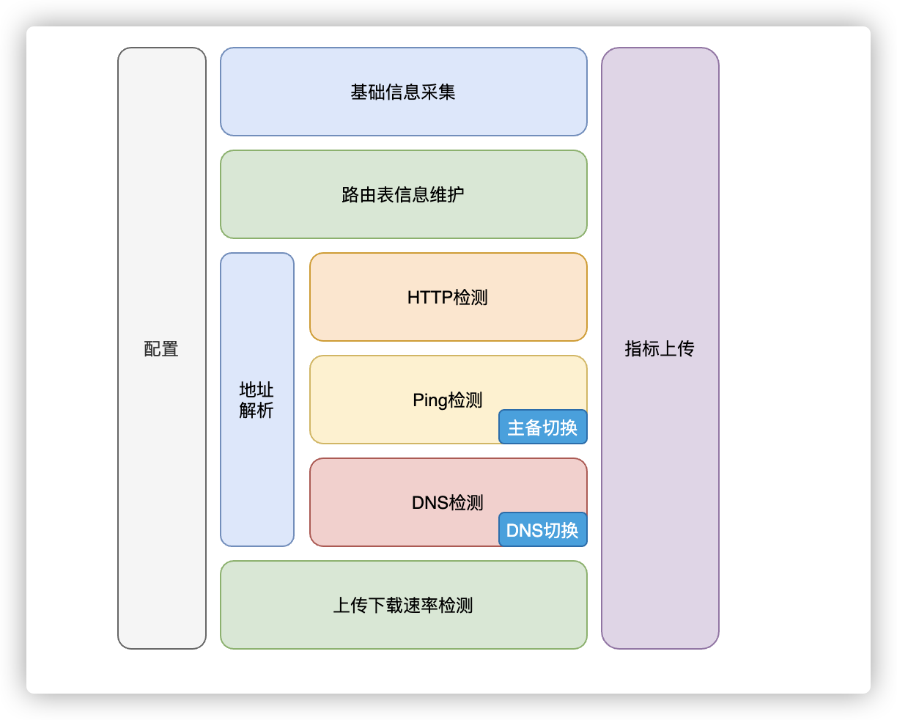

便利蜂 | 门店网络与 Rust 落地实践
作者：刘凯，裴振 / 后期编辑：张汉东
编者按： 便利蜂门店相信很多人都去过，也享受过其便利的自助服务。但谁能想到，Rust 已在便利蜂100% 支撑店内网络已达 2 年时间，稳定性达 99.9999% 呢？ 功能虽然不太复杂，但这个是 Rust 在嵌入式领域落地的一个非常接地气的场景了！
背景
关于便利蜂
便利蜂是一家以新型便利店为主体的科技创新零售企业，公司以科技为核心驱动运营，以“品质生活 便利中国”为己任，怀抱“小小幸福 在你身边”的初心，为中国消费者提供优质、健康、安心的产品和高效、便捷、满意的服务。目前全国开业的门店已超2000家。
网络在门店的作用
便利蜂店内大部分设备都已智能化，依赖网络的设备多达数十种，覆盖了从订单支付到店内运营的方方面面。 店内琐碎的事务中，背后有若干算法在支撑，从订货、陈列、盘点、废弃、热餐制作，到实时变价、自助咖啡、订单结算，每一个环节都有着复杂的网络交互。 要支撑住门店的正常运营，门店网络的稳定非常重要。
门店网络架构

上图是便利蜂门店网络拓扑。 在便利蜂门店场景中，要特别关注稳定性与成本的平衡。 对于网络稳定性，拓扑中可以看到，互联网出口以主线为主4G作为兜底，由算法控制主线恶化程度后决定是否启用4G网络，从而保证门店网络的可靠。 关于成本，便利店生意很注重规模效应，大规模的场景通常对单套成本是非常敏感的。拆解开看，成本项主要有三部分，第一是设备成本，第二是互联网接入成本，第三是运维人力成本。关于设备成本，在后续章节有所提及。关于互联网接入，通常我们会使用最低廉的宽带做为主线接入。
难点分析
基于上述要求，我们要达成【高质量的一人管千店】，那么会面临几个难题:
- 如何定义高质量；
- 如何解决多品牌设备问题；
- 这么多设备配置，因为各种原因，每天都有可能出现网络中断的情况，如何做到一人管千店。
其中最关键的因素在网关，它负责重要的线路逃生决策，还兼具各种智能检测、信息采集等任务，汇聚信息到中心，最终会在监控中实时分析全国门店的网络情况。 所以网关是整个管理系统的眼睛和手，总部系统是大脑。
方案选择
硬件和系统选型
硬件选型要满足如下条件：
- 不能单一供应商，风险太大；
- 多供应商带来的复杂性不能伤害一人管千店的目标；
- 硬件稳定性不输给大厂设备；
目前我们选型的策略如下：
- 品牌 or ODM（设备制造商）；
- 品牌往往Console界面互不兼容且不具备编程能力，灵活度大打折扣；
- ODM往往出货量远低于大品牌，需要对硬件有一定了解谨慎选择；
- 我们目前倾向ODM；
- 高通 or MTK；
- 从sdk成熟度来讲，高通占优，但若选MTK需要接受使用低版本Kernel；
- 从成本来讲，MTK占优；
- 我们目前倾向MTK；
- 系统用 OpenWRT 官方 or 厂商 SDK；
- 如果对新版本有洁癖，且具备一定的 Kernel debug 能力，建议用 OpenWRT 官方，我们在这条路上有过探索，是完全可以走通的；
- 综合考虑后，我们目前倾向厂商SDK。
从以上策略出发，便利蜂必然会是一个多系统并存的状态。
开发语言为什么选 Rust
我们的嵌入式硬件有三种，两种 ARM 和一种 MIPS，其中最低的配置为 MT7621 CPU，有 880MHz MIPS CPU、512M内存（可用400M）、370M Flash，属于嵌入式环境。
兼顾嵌入式环境和成熟度，入选的语言有：Golang、C、Lua、Shell、Rust。分析各语言利弊如下：
- Golang:
- 优势：支持多种平台的移植、强大的异步编程能力、并且开发快速；
- 缺点：需要 Runtime，内存和CPU占用较高，且测试中发现MIPS版本有内存泄漏；
- 结论：排除；
- C:
- 优势：代码简洁、轻量高效，执行效率高，可移植性好；
- 缺点：开发效率不高、需要面临内存安全性问题；
- 结论：备选；
- Lua:
- 优势：Openwrt 因为有 luci，是最佳选择，并且足够的轻量，可以完美的和C系语言做粘合；
- 缺点：其他OS移植sdk的工作量较大；
- 结论：排除；
- Shell:
- 优势：轻量、开发快捷、上手难度低、系统自带；
- 缺点：对类型的定义和检查不严格，不适合做大型项目的构建，对于高质量交付对人要求较高；
- 结论：排除；
- Rust:
- 优势：运行速度快、内存安全、没有Runtime和GC(零成本抽象)、跨平台；
- 缺点：学习曲线陡峭、上手难度大、比较新的语言、许多基础库待完善；
- 结论：备选。
最终在 C 和 Rust 中做选择，做过一些尝试后最终决定使用 Rust, 它的高质量交付是我们最关心的优势。
Rust 实践
网络质量定义
衡量一个门店网络质量的好坏最直接的方法就是通过Http检测或者ICMP检测，根据检测结果的丢包率、延迟等相关指标来评定。我们根据门店的已有监控数据计算了一个合理的Ping值检测定级区间，具体分级如下：
- A 级：延迟 <= 200ms or 丢包 <= 10%
- B 级：延迟 <= 500ms or 丢包 <= 20%
- C 级：延迟 <= 600ms or 丢包 <= 40%
- D 级：延迟 > 600ms or 丢包 > 40%
A级网络质量基本不会对门店产生影响；B级基本会造成门店网络出现卡顿以及服务短暂失效等影响；C级就是比较大的影响了，门店网络属于短暂不可用；D级则代表门店网络不可用状态严重影响到了门店业务。
线路逃生的难题
因为低成本的宽带和分散的接入方式，一些门店的网络环境甚至比家用网络更不可靠，所以网关会配有一个 4G 路由器来作 Standby。在主线中断时候切换到备线，在主线恢复后切换回主线。保证门店的网络不受影响。同时，店内实时采集监控数据到中心，并通过流式处理实时监控全局状态，当单店出问题时，会有工单生成一线运维介入，当整体A级比例下降时，网络组二线会第一时间收到电话告警并介入处理。
理想情况下，主线质量始终要优于备线质量，所以即使主线和备线同等级别，也应该优先保证线路在主线。其余情况则是谁好在谁则路由保持在哪里。
但实际情况不止如此。主线通常不会直接中断，而是处于弱网状态，大多数设备此时只能眼看网络变差不能切换，我们会把质量经过ABCD规则匹配并防抖后第一时间做切换。但这又引出新问题，主线故障会频繁在A和D之间抖动，这时候就会出现主备切换的 flapping 状态，因为路由切换的瞬间会影响到业务 http 访问，所以我们通过指数退避的方式尽可能的减少 flapping 的发生。然而又会暴露一个问题：在退避期间，由于抑制了频繁切换，但是实际线路已经无法使用，就会导致全店网络中断情况的发生。这时候就需要采用异常介入模式，避免网络处于瘫痪状态。
快速调研，扫清障碍
既然明确了需求、明确了选型，剩下的就是 POC 的工作了。
首先是并发库方面。在 Rust 社区中，我们有几个选型可以参考：
crossbeam(多线程)async-std(异步)tokio(异步)
crossbeam 这个库非常之优秀，完全可以满足程序的功能设计，但是我们需要考虑到我们的设备硬件资源限制条件，CPU 更是能省则省，所以我们更倾向于选择一个异步运行时来解决我们的问题。
tokio 和 async-std 都是比较好的选择，在最初开发的时候 async-std 项目刚刚开始起步，很多功能还没有完善，并且 tokio 库已经在很多项目中进行过验证，稳定性各方面要相对于 async-std 更好一些。所以我们最终决定采用 tokio 来作为我们整个程序的异步运行时。
其次是网络检测方面。网络质量检测不仅需要检测主备线质量、还有若干业务的质量检测，ip数量一般能达到20~30左右。并且这些检测的频率、Size、Interface也各不相同。我们的网络设备款式比较多，Ping 命令的输出格式不统一，且由于 Ping 命令本身是一个 blocking 的操作，放在异步运行时中需要单开 worker 来执行这些操作，后来开始调研其他的 Ping 实现，如果要做到多设备兼容需要适配各种设备上安装的 Ping 命令的输出结果，并且和程序嵌套会繁琐，开销较大；
我们对Ping的使用主要有这几个需求：
- 每个地址发送的频率不一致，大小不一致
- 大包低频：对一些比较重的资源地址采用了大包检测，但同时要保证门店网络的带宽不受影响所以作为低频包
- 小包高频：对一些敏感资源地址，采用小包高频策略，这样可以保证每分钟相对均匀的检测
- 小包低频：对一些不敏感，仅做链路检测的做小包低频，能节省带宽
- 发送
Ping包需要与Interface接口绑定- 由于需要支持主备线路由检测，需要绑定 Interface 来做（backup：静态路由）
- 最好支持
Traceroute功能（Icmp）- 需要上传重点监测线路的完整 traceroute 信息到机房来做后期故障分析
- 能与
Tokio的 Runtime 结合并且支持mips、arm、aarch64等架构- 网络多元化，拥有多款设备需要做到跨平台，并且对资源占用有要求
- 能控制 Sequence Number 起始数
- 可编程
- 可个性化定制、符合人体工程学
社区已有几个实现：
- oping: oping 是一个 Rust 绑定 C 的实现，还是一个 blocking 的操作，但是能提升一些编程体验；
- fastping: fastping 是类似 go 的 fastping 实现，可以同时 Ping 多个地址，但是我们的需求是在 Ping 很多地址的前提下 duration 不同、size 不同、绑定的网络接口不同，所以虽然也是 batch 类的 Ping，但是不太适用；
- tokio-ping: tokio-ping 其实最开始是最适合我们项目的，但是 rust 异步生态那会刚好处在新老交替的阶段，tokio-ping 处于异步的上一个阶段，没法跟我们的项目完美兼容，需要一些 compat 才能使用，并且作者基本已经不维护了。
基于以上的情况，我们实现了一套适用于自己的异步 Ping 程序surge-ping 完全贴合我们的使用需求。
代码示例：
use std::time::Duration; use surge_ping::Pinger; #[tokio::main] async fn main() -> Result<(), Box<dyn std::error::Error>> { let mut pinger = Pinger::new("114.114.114.114".parse()?)?; pinger.bind_device(Some("eth0".as_bytes()))?; // pinger.set_ttl(20)?; pinger.timeout(Duration::from_secs(1)); for seq_cnt in 0..10 { let (reply, dur) = pinger.ping(seq_cnt).await?; println!( "{} bytes from {}: icmp_seq={} ttl={:?} time={:?}", reply.size, reply.source, reply.sequence, reply.ttl, dur ); } Ok(()) }
程序结构

网关 Agent 的组织图如上所示，我们对每个门店都部署了 Agent 来监测门店网络质量，通过将采集的数据上传到监控系统中对门店网络进行实时监控，在故障发生时能做到尽快发现减少门店损失。
多设备兼容
目前我们门店由于网络设备比较多元化，所以会涉及到跨平台的需求，以目前我们主要的两个平台 ARM64 和 MIPS 举例展现下 Rust 的跨平台能力。
MIPS交叉编译
这种需要借助厂商的编译 sdk 来做，由于我们使用的是一款老 Rom（mipsel-uclibc）的，这种在 rust 的编译阶级里属于第三层，没有预设在 rust 官方支持的 target 列表中，所以要借用xargo来实现编译。
先确定设备的三元组信息（{arch}-{vendor}-{sys}-{abi}），一般通过 toolchain 的目录基本可以确定 libc 版本，比如我们的：toolchain-mipsel_24kec_gcc-4.8-linaro_uClibc，我们看到 Arch 是mipsel，ABI 是 uclibc，vendor 的话一般是unknown,system 为Linux,所以我们的三元组信息为mipsel-unknown-linux-uclibc.
操作如下：
# step1 配置环境变量
export STAGING_DIR="/path/to/staging_dir"
export PATH="$STAGING_DIR/toolchain-mipsel_1004kc_gcc-4.8-linaro_uClibc/bin/:$PATH"
export OPENSSL_DIR='/path/to/openssl'
export AR_mipsel_unknown_linux_musl=mipsel-openwrt-linux-uclibc-ar
export CC_mipsel_unknown_linux_musl=mipsel-openwrt-linux-uclibc-gcc
export CXX_mipsel_unknown_linux_musl=mipsel-openwrt-linux-uclibc-g++
# step2 指定编译选项
cat ~/.cargo/config
[target.mipsel-unknown-linux-uclibc]
linker = "mipsel-openwrt-linux-gcc"
# step3 安装Xargo
cargo install xargo
# step4
# 向Cargo.toml中加入如下内容，因为panic有栈回溯， 某些平台不支持这个语法;取消panic展开异常堆栈信息有利于减小程序体积(https://doc.rust-lang.org/edition-guide/rust-2018/error-handling-and-panics/aborting-on-panic.html)
[profile.dev]
panic = "abort"
[profile.release]
panic = "abort"
# step5
cat Xargo.toml
[target.mipsel-unknown-linux-uclibc.dependencies.std]
features = []
# step6 编译
xargo build --target mipsel-unknown-linux-uclibc --release
TIPS:
在早期编译期间遇到了很多libc库支持不全的问题，这时候需要去查 uclibc 的代码来协助完善 rust 的libc库。
ARM64 交叉编译
需要用到 Cross 项目： https://github.com/rust-embedded/cross
使用 Cross 的坑不多，大部分 unix 类的 OS 都可以使用它，它默认使用 docker 进行编译。使用方法：
cargo install cross
cross build --target aarch64-unknown-linux-gnu --release
对于 OpenSSL，非 MIPS 架构可直接使用 rustls-tls 库，使用方法如下：
# reqwest使用rustls
reqwest = { version = "0.11", default-features = false, features = ["rustls-tls", "json"]}
若使用 mips + openssl，需要将 OpenSSL 在 Dockerfile 中注明编译。Dockerfile 如下：
# File: docker/Dockerfile.aarch64-gnu
# openssl: https://github.com/rust-embedded/cross/blob/c183ee37a9dc6b0e6b6a6ac9c918173137bad4ef/docker/openssl.sh
FROM rustembedded/cross:aarch64-unknown-linux-gnu-0.2.1
COPY openssl.sh /
RUN bash /openssl.sh linux-aarch64 aarch64-linux-gnu-
ENV OPENSSL_DIR=/openssl \
OPENSSL_INCLUDE_DIR=/openssl/include \
OPENSSL_LIB_DIR=/openssl/lib
然后进行编译
docker build -t kolapapa/aarch64-gnu:0.1 docker/ -f docker/Dockerfile.aarch64-gnu
cat > Cross.toml <<EOF
[target.aarch64-unknown-linux-gnu]
image = "kolapapa/aarch64-gnu:0.1"
EOF
cross build --target aarch64-unknown-linux-gnu --release
总结
Rust 非常适合此类门店嵌入式场景，其完整易用的工具链、高质量社区、安全的内存管理，能大量缩短上线时间、提高交付质量。 目前 Rust 在便利蜂已 100% 支撑店内网络 2 年时间，稳定性达 99.9999%，需求频次每半个月会做一次迭代。
开源社区贡献
我们在实践的过程中也对社区有一些小的贡献：
- https://github.com/rust-lang/libc 帮助
libc库完善了对于mips-uclibc的支持； - https://github.com/rust-lang/socket2 支持了绑定
interface的功能，并且添加了对mipsel-uclibc的支持； - https://github.com/kolapapa/surge-ping 一个异步Ping的实现，也可以用作
traceroute(ICMP版)；
作者简介
刘凯，便利蜂运维开发工程师，主要负责 监控报警系统 以及 门店网络多元化项目 的开发和维护。
裴振，便利蜂运维负责人。
最后，便利蜂正在寻找优秀的伙伴，每一份简历我们都会认真对待，期待遇见。